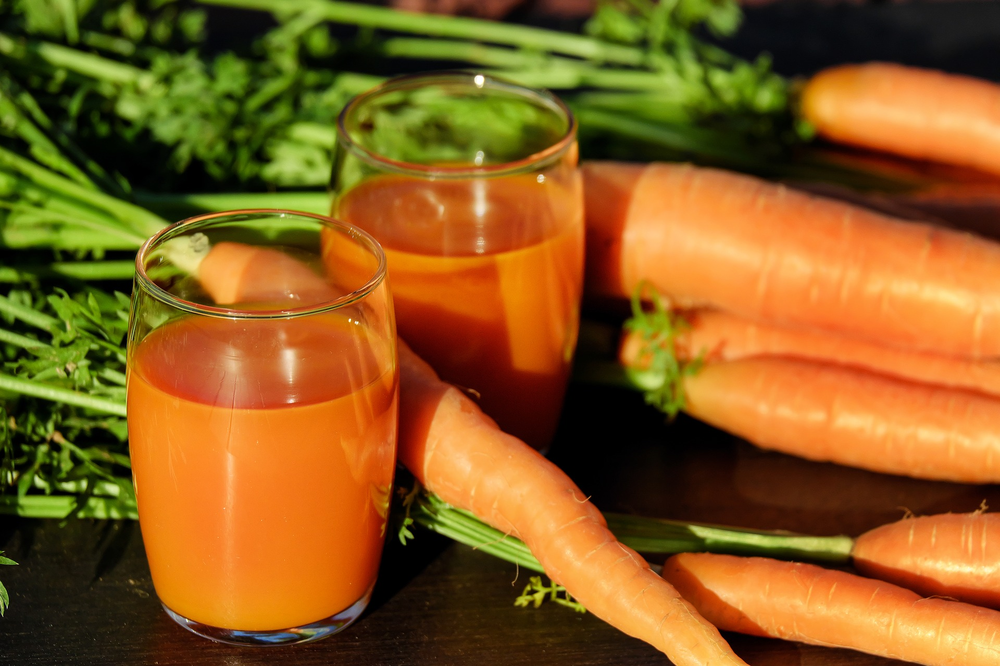
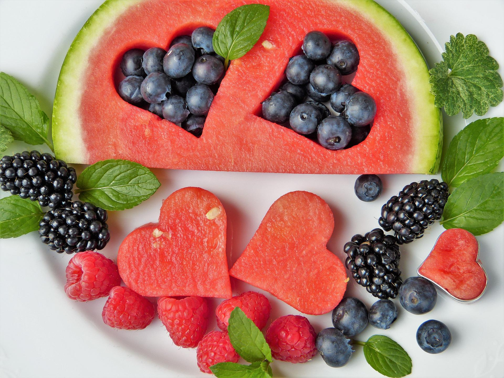

MEAL PLAN |
||||||||
|
||||||||
|  |
healthy diet, Eat a combination of different foods,
Improve your intake of vegetables always including veggies in your meal; eating
Multivitamin Supplements
To make sure you have sufficient levels of nutrients, |
|||||||
|  |
Avoid use of alcoholThere is no safe level for drinking alcohol.alcohol can lead to health problems such as mental and behavioural disorders, including alcohol dependence, major NCDs such as liver cirrhosis, some cancers and heart diseases, as well as injuries resulting from violence and road clashes and collisions.
Reduce Fat, Salt, and SugarWhen eating out, choose baked or grilled food instead of fried and do the same at home. Make water your go-to drink instead of soda or sweetened beverages | |||||||